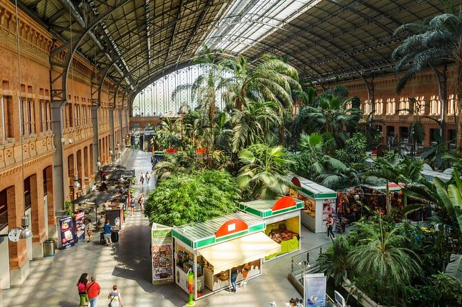
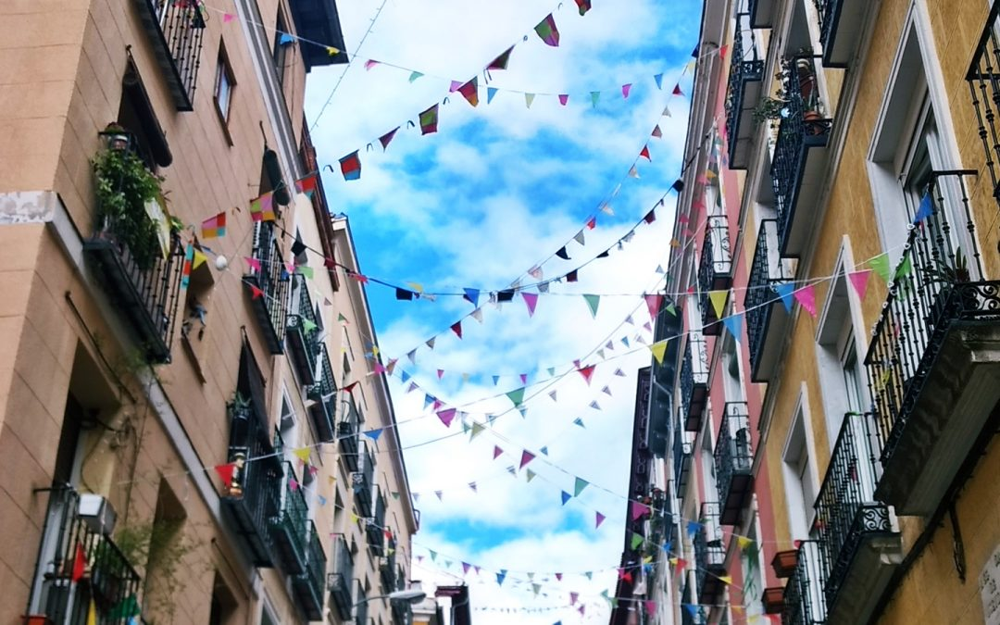
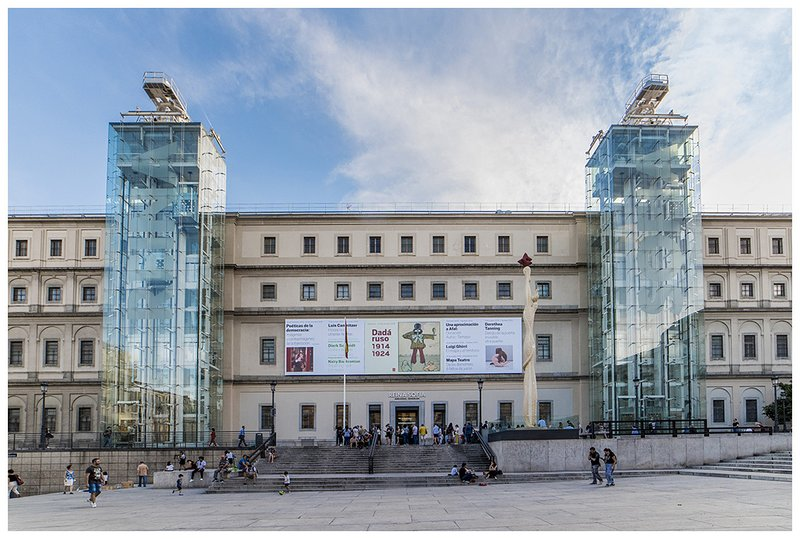
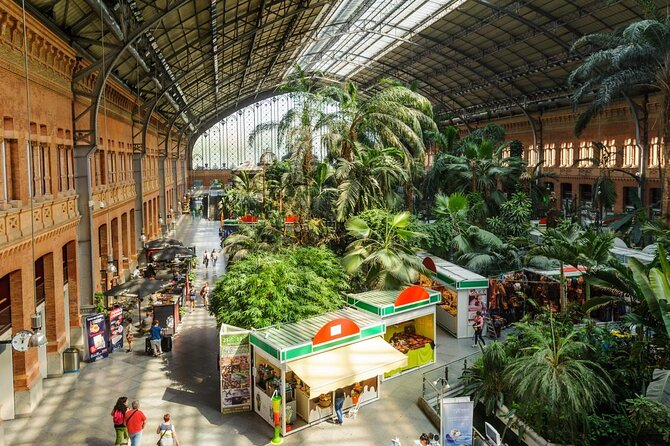

Bienvenidos a Madrid!
Must See Places in Madrid

Gran Via
Gran Vía houses numerous restaurants, bars and clothing stores, cinemas and theatres. In the past few years, and although many of the theatres and cinemas have closed, Gran Vía retains its reputation as the Spanish Broadway.

Atocha
Madrid Atocha's beautiful original train shed opened in 1892. A hundred years later, it had its tracks removed in 1992 and is now a lovely tropical garden complete with turtle pool. There are several bars & restaurants with outside tables, making this a great place to wait for your train.

Malasana
Malasaña is the area enclosed by San Bernardo to the west, Gran Vía to the south, calle Fuencarral to the east and Calle de Carranza to the north. Cross Calle San Bernardo and you enter the area of Conde Duque with the same northern and southern boundaries but ending at Plaza de España/ Calle de la Princesa.

La Reina Sophia Museum
The Reina Sofia Museum (Museo Nacional Centro de Arte Reina Sofia) is Madrid's premier modern art gallery featuring mostly works by Spanish artists. Among them isGuernica, a political statement on the Spanish Civil War by Pablo Picasso, as well as a room devoted to Joan Miró's paintings and a collection of about 20 Salvador Dalí pieces.
Gran Via
Gran Vía houses numerous restaurants, bars and clothing stores, cinemas and theatres. In the past few years, and although many of the theatres and cinemas have closed, Gran Vía retains its reputation as the Spanish Broadway.

Atocha
Madrid Atocha's beautiful original train shed opened in 1892. A hundred years later, it had its tracks removed in 1992 and is now a lovely tropical garden complete with turtle pool. There are several bars & restaurants with outside tables, making this a great place to wait for your train.
Malasana
Malasaña is the area enclosed by San Bernardo to the west, Gran Vía to the south, calle Fuencarral to the east and Calle de Carranza to the north. Cross Calle San Bernardo and you enter the area of Conde Duque with the same northern and southern boundaries but ending at Plaza de España/ Calle de la Princesa.
La Reina Sophia Museum
The Reina Sofia Museum (Museo Nacional Centro de Arte Reina Sofia) is Madrid's premier modern art gallery featuring mostly works by Spanish artists. Among them isGuernica, a political statement on the Spanish Civil War by Pablo Picasso, as well as a room devoted to Joan Miró's paintings and a collection of about 20 Salvador Dalí pieces.